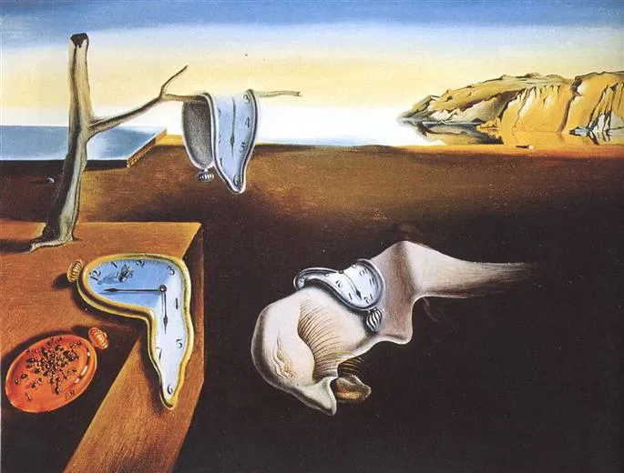

$5,989.00
La Persistencia de la Memoria-Salvador Dali
Una de las mejores representaciones del arte rupestre del paleolítico, con figuras de bisontes, caballos, ciervos, manos y otros signos en las cuevas que le dan nombre, situadas en el pueblo cántabro de Santillana del Mar.
$146.513
El Nacimiento de Venus-Bottticelli
El nacimiento de Venus (en italiano: La Nascita di Venere) es un cuadro realizado por el pintor renacentista Sandro Botticelli, una de las obras cumbre del maestro florentino y del Quattrocento italiano. Está ejecutado al temple sobre lienzo y mide 278,5 cm de ancho por 172,5 cm de alto. Se conserva en la Galería Uffizi, en Florencia, donde está expuesto en la sala 10-14, llamada «de Botticelli» (Inv. 1890 n. 878).
$2,512.00
Las dos Fridas-Frida Kahlo
En esta obra se representa a Frida en su colorida vestimenta mexicana de tehuana que era la mujer a la que Diego amaba y/o había amado. En la otra se ve a Frida con un antiguo vestido victoriano de encaje blanco, la versión europea de Frida, que agradaba menos a su marido. Algunos historiadores del arte sugieren que ambas figuras simbolizan esa herencia dual de Frida. Su padre, Guillermo Kahlo, era alemán, mientras su madre, Matilde Calderón, era mestiza (hija de indio y una descendiente de españoles).
$620,516.00